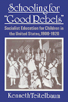

The first history of American socialist education for children
The first history of American socialist education for children


 The first history of American socialist education for children
The first history of American socialist education for children

|  |
Schooling for "Good Rebels"Socialist Education for Children in the United States, 1900-1920Kenneth Teitelbaumcloth EAN: 978-0-87722-980-3 (ISBN: 0-87722-980-5) |
"An important contribution to our understanding of the American Socialist Party's little-known education efforts.... Its argument suggestively straddles the history of education and socialist history to show the reader the differences between bourgeois and socialist curriculum."
—Bruce C. Nelson, Central Michigan University
During the first two decades of this century, American Socialists organized weekend schools for children to foster social justice, working-class consciousness and solidarity, and activism. Kenneth Teitelbaum explores the historical development, organization, institutional characteristics, and curriculum of these alternative educational settings, particularly those in New York City, Rochester, and Milwaukee. In his discussion of this historic effort to contest the dominant messages of capitalist culture, he highlights the political nature of the school's curricula and relates the socialist Sunday School project to current efforts to promote a more socially responsible curriculum.
Through archival research and interviews with former student and teachers of the socialist Sunday schools, Teitelbaum is able to provide the first detailed study of American socialist efforts in the area of childhood education. He presents the actual curricula used with children in radical school settings and discusses the various teaching methods used. More than 10,000 children, ages five to fourteen, attended approximately 100 socialist Sunday schools in sixty-four cities and towns throughout the U.S. between 1900 and 1920.
"Kenneth Teitelbaum has written an informative and well-documented book on a neglected aspect of American history. Anyone interested in the socialist movement and in experiments in children's education would be well advised to read it."
—Paul Avrich, Distinguished Professor of History, Queens College, and author of The Modern School Movement: Anarchism and Education in the United States
Acknowledgments
Introduction: History, Politics, and Curriculum: The Example of Socialist Sunday Schools
1. American Socialism during the Progressive Era: Politics, Culture, and Education
2. Socialist Sunday Schools and Related Schools: Historical Overview
3. Case Studies: New York City, Rochester, and Milwaukee
4. Organizing Socialist Sunday Schools: Rationales, Problems, and Governance
5. Teachers and Students
6. Socialist Sunday School Curriculum
7. The Socialist Alternative: Perspectives on Teaching and Curriculum
Conclusion: Our Socialist Past, Our Curriculum Future
Notes
Index
Kenneth Teitelbaum is Associate Professor in the Division of Education at the State University of New York at Binghamton.
© 2015 Temple University. All Rights Reserved. This page: http://www.temple.edu/tempress/titles/869_reg.html.